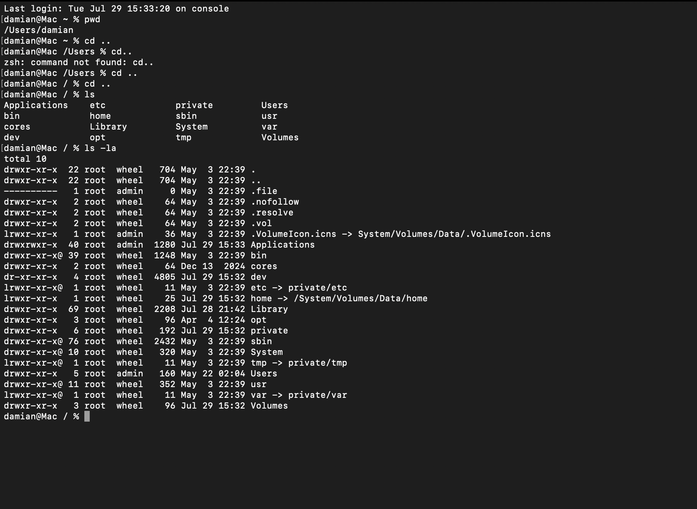

Navigating the File System
First, you should learn how to navigate the file system using the terminal:
The first few commands you should know are
pwd: Checks which directory you are currently in (in the example I'm in /home/damian)
cd: Changes to the given directory (.. is moving back a directory)
ls: Lists the subdirectories under a given directory

Some commands require you to be an administrator. You can gain administor access for that command with sudo or you can keep it with sudo su. You can return to normal access with exit
Looking at the example below, you can also see that linux is case sensitive. "thing" is NOT the same as "Thing".

You also don't have to have the ls command (or any particular command) point to something in your current directory:
Notice how etc was a subdirectory of the / directory (bottom most root) so /etc/ points to it!

mkdir: Creates a new directory under the current one (we can see using ls there is a new directory)
rmdir: Removes a specified directory
ls -la: Shows all files in a specified directory, including hidden ones (useful for penn testing and CTFs)

Imagine we now have a file "new.txt" under the current directory.
cp: Copies the file into the specified directory (in the example the file is copied to Desktop/) (The original file is still in the OG location)
rm: Removes the specified file
mv: Moves the specified file into the specified directory

echo: echo "hello" > new.txt creates a txt file under the current directory named "new.txt" with the text "hello"
locate: locates the specified file on the computer and where it is
updatedb: Updates the data-base (requires sudo)

man: Gives a manual for the specified command

chmod: Stands for change mode; change file and directory permissions
You can see permissions by looking at ls -la.
d indicates if its a directory; r means the file is readable, w means editable, x means executable (important for python scripting in networking)
chmod +x filename gives the ability for all users to executive the file
Notice how there are three groups of three when you look at ls -la. The first one is owners of the file/directory, the second is group, and the third one is others.
chmod 777 grants read, write, and execute permissions to all three categories: owner, group, and others

Something cool as the for the most part macOs uses the same commands and command system:
